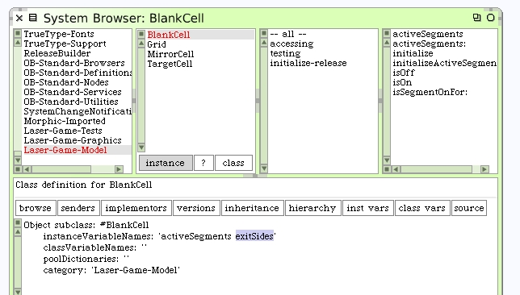
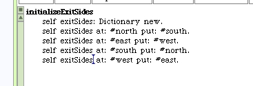
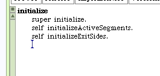
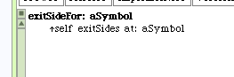

We've written methods to check the state of individual segments within our cell. We also need methods to answer the output direction for a given laser beam input direction. The BlankCell class needs another instance variable.
As before, create accessors. The #initializeExitSides method should be written. We can include it with the #initialize activity for the Blank Cell.
 One more piece. Here's the method that will answer the exit side for a given input side. Add it in the "accessing" protocol.
We should have a unit test for this new behavior.